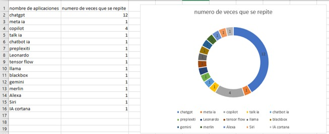
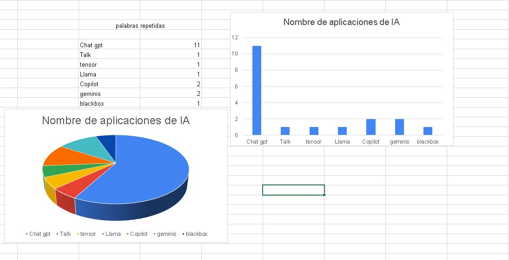
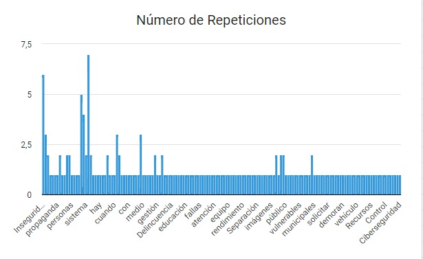
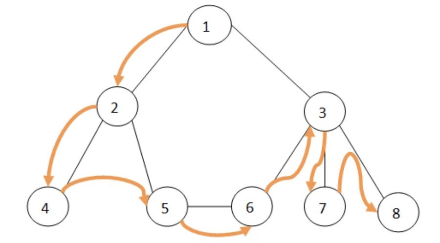
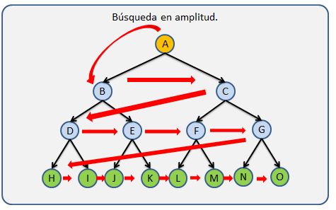
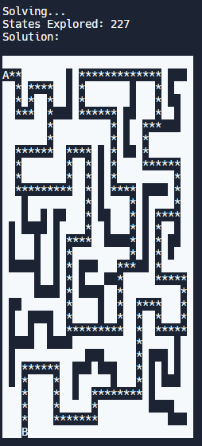
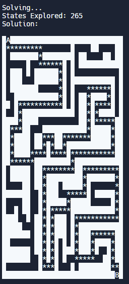
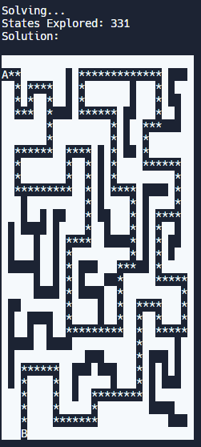
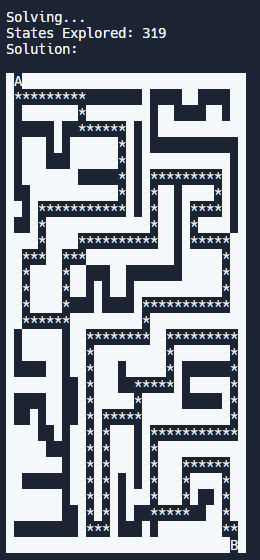

Hoy tuve dificultad al utilizar github y no pude realizar el ejercicio de graficar la encuesta
vimos que datos se repetían y buscamos graficar de cierto que nos brindara dicha información en una grafica de pastel


Se agruparon las actividades que eran similares y se contaron manualmente
Elegimos la columna número 5 y sacamos las palabras repetidas con la ayuda de chatGPT y las rectificamos manualmente e hicimos lo mismo con las palabras únicas (que no se repetían) Luego último hicimos la suma de las palabras repetidas y también sacamos el número de palabras únicas y por último hicimos un gráfico circular 3D con los números de las palabras repetidas

de manera manual tome los nombres de ias distintas y luego conté cuantas veces se repetía cada una, para al final juntar los valores y generar un anillo con Excel donde podemos ver que lo que vas se repite es chatgpt
yo utilice excel con formulas para sacar las palabras que estaban repetidas separando el texto y luego contando las palabras mas importantes de las inteligencias artificiales utilizando esta formula para contar las palabras que se repiten, SUMA(SI(NO(ESERROR(BUSCAR("chat"; A25:AY41)));1;0))+SUMA(SI(NO(ESERROR(BUSCAR("chat gpt"; A25:AY41)));1;0))
SE REALIZO UTILIZANDO FORMULA DE EXCEL Y TABLAS DINAMICAS.

David Sarria- Valentina Montealegre: Nos dimos cuenta que hay varias coincidencias y todas apuntan hacia el hecho de que todos contamos con habilidades blandas suficientes y exactas para llevar a cabo un excelente trabajo en equipo.

basicamente lo que hicimos fue indentificar, contar las palabras y finalmente estructuramos los resultados en una tabla de conteo que permite ver rápidamente la frecuencia de cada palabra y proporciona una vision general de los temas mas mencionados. los cuales son la inseguridad, contaminación y transporte
En la clase de hoy aprendi sobre algoritmos de busqueda y los tipos que existen
el término LIFO se utiliza en estructuras de datos y teoría de colas. Guarda analogía con una pila de platos, en la que los platos van poniéndose uno sobre el otro, y si se quiere sacar uno, se saca primero el último que se ha puesto.

Una búsqueda en profundidad (DFS) es un algoritmo de búsqueda para lo cual recorre los nodos de un grafo. Su funcionamiento consiste en ir expandiendo cada uno de los nodos que va localizando, de forma recurrente (desde el nodo padre hacia el nodo hijo).
La búsqueda en anchura, también conocida como BFS (breadth-first search en inglés), encuentra los caminos más cortos desde un vértice de origen dado a todos los demás vértices, en términos del número de aristas en los caminos.
| Algoritmo | Laberinto 1 | Laberinto 2 |
|---|---|---|
| DFS | 277 | 265 |
| BFS | 331 | 319 |
| Algoritmo | Laberinto 1 | Laberinto 2 |
|---|---|---|
| DFS |  |  |
| BFS |  |  |
# -*- coding: utf-8 -*-
"""Tu primera red neuronal en Python y Tensorflow
Automatically generated by Colab.
Original file is located at
https://colab.research.google.com/drive/1ehETBOVtCqe7G6HOvm84hfXba8Gd9ILW
"""
# Importa las bibliottecas Tensorflow y numpy
import tensorflow as tf
import numpy as np
#Se le da a la red unos ejemplos de entrada y salida
# Coloca en un arreglo temperaturas en celsius
celsius = np.array([-40, -10, 0, 8, 15, 22, 38], dtype=float)
# Coloca en un arreglo temperaturas en fahrenheit
fahrenheit = np.array([-40, 14, 32, 46, 59, 72, 100], dtype=float)
#Esta parte estaba comentada
#capa = tf.keras.layers.Dense(units=1, input_shape=[1])
#modelo = tf.keras.Sequential([capa])
# Crea una capa densa con 3 neuronas y una entrada de 1 dimensión
oculta1 = tf.keras.layers.Dense(units=3, input_shape=[1])
# Crea otra capa densa con 3 neuronas
oculta2 = tf.keras.layers.Dense(units=3)
# Crea la capa de salida con 1 neurona
salida = tf.keras.layers.Dense(units=1)
# Crea un modelo secuencial con las capas definidas
modelo = tf.keras.Sequential([oculta1, oculta2, salida])
# Compila el modelo, configurando el optimizador y la función de pérdida
modelo.compile(
optimizer=tf.keras.optimizers.Adam(0.1), # Usa el optimizador Adam
loss='mean_squared_error' # Función de pérdida: error cuadrático medio
)
# Muestra un mensaje indicando que comienza el entrenamiento
print("Comenzando entrenamiento...")
# Entrena el modelo con los datos de celsius y fahrenheit durante 1000 épocas
historial = modelo.fit(celsius, fahrenheit, epochs=1000, verbose=False)
# Muestra un mensaje indicando que el modelo ha sido entrenado
print("Modelo entrenado!")
# Importa la biblioteca Matplotlib para graficar
import matplotlib.pyplot as plt
# Etiqueta del eje X
plt.xlabel("# Epoca")
# Etiqueta del eje Y
plt.ylabel("Magnitud de pérdida")
# Grafica la magnitud de pérdida a través de las épocas
plt.plot(historial.history["loss"])
# Muestra un mensaje indicando que se hará una predicción
print("Hagamos una predicción!")
# Realiza una predicción para 100 grados Fahrenheit
resultado = modelo.predict([100.0])
# Muestra el resultado de la predicción
print("El resultado es " + str(resultado) + " fahrenheit!")
# Muestra un mensaje sobre las variables internas del modelo
print("Variables internas del modelo")
#print(capa.get_weights()) # (Este código está comentado y no se ejecutará)
# Muestra los pesos de la primera capa oculta
print(oculta1.get_weights())
# Muestra los pesos de la segunda capa oculta
print(oculta2.get_weights())
# Muestra los pesos de la capa de salida
print(salida.get_weights())